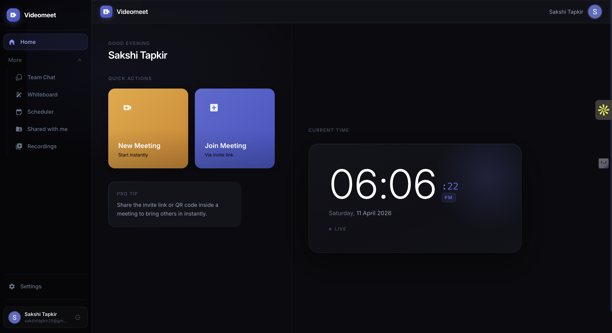
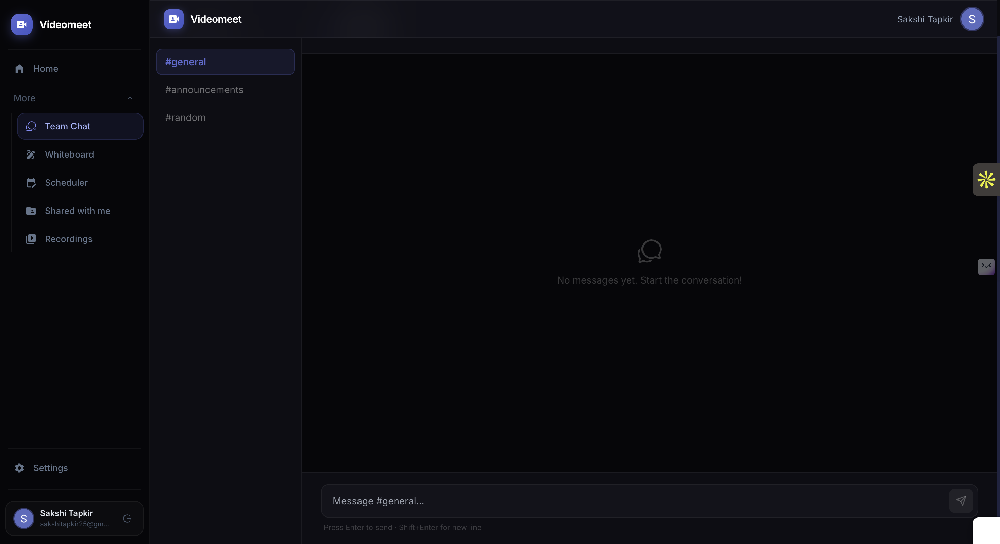
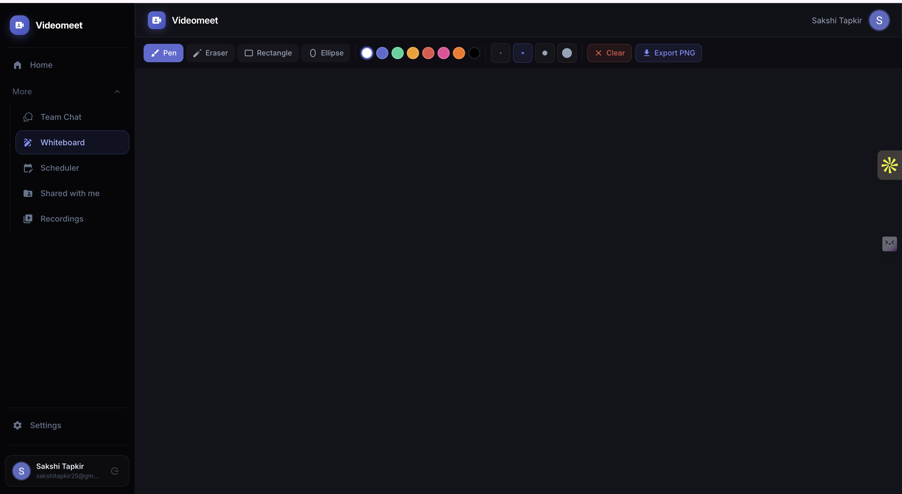
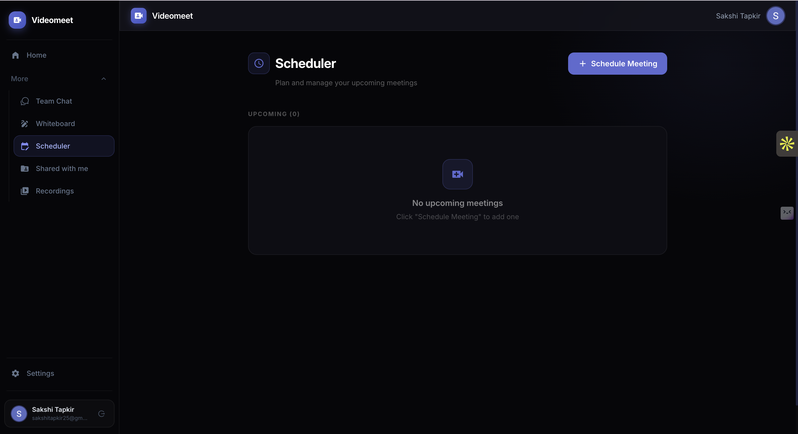
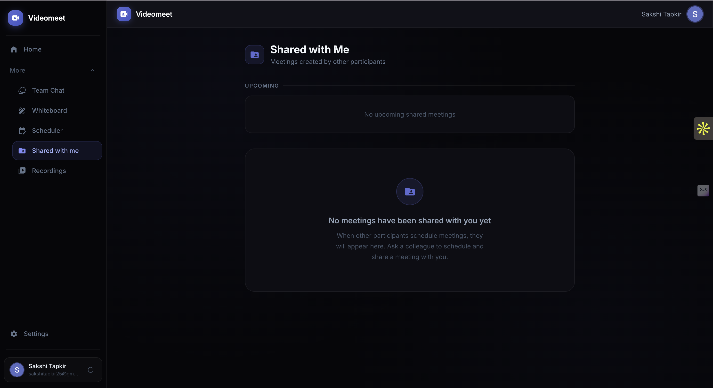
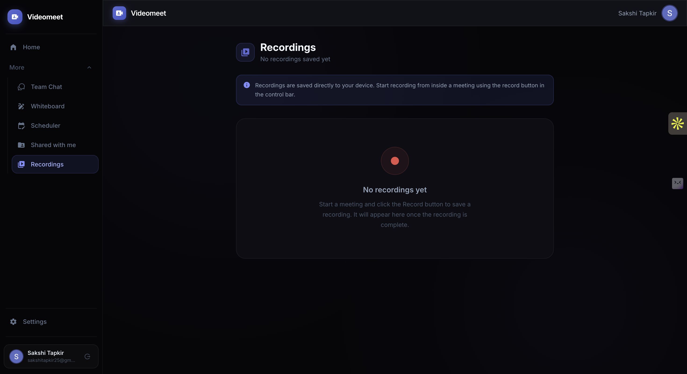

Videomeet is a video conferencing app I built from scratch — similar to Zoom or Google Meet. You can start a room, share a link, and have multiple people join with live video, audio, and screen sharing, all from a browser on mobile or desktop. The video streams directly between users without going through a central server, which keeps things fast. I also built out the backend with a Node.js API layer so sessions are secure and the platform can handle multiple concurrent rooms reliably.
Live Project




